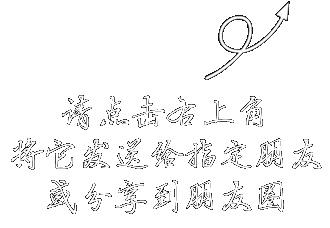

{$contentInfo.title}
已有{$contentInfo.cy_num}0人参与
{$contentInfo.description}
开始考试
{$v}
{$contentInfo.score}0" onClick="return toggle(this);">
{$b_array[$key]}.{$val}
{$ve}
详细分析:
{$zh_desc[$ke]}
分享给朋友圈查看考试成绩
